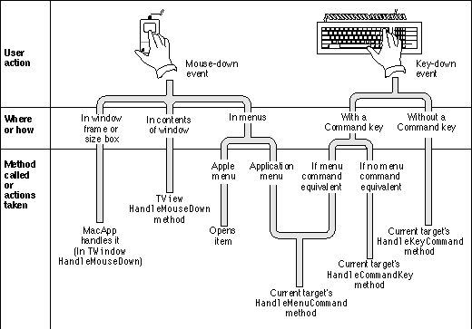
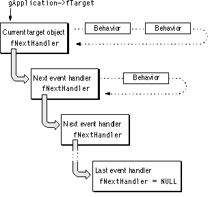
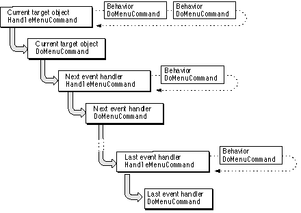
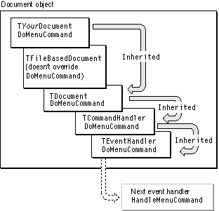

Dispatching Events
A MacApp application receives numerous Toolbox events from the operating system, including mouse-up and mouse-down events, key-up and key-down events, disk events, and high-level events. The application object processes Toolbox events by calling itsHandleToolboxEventmethod, with the following results:The
- If any enabled behavior objects are attached to the application, each in turn gets a chance to handle the event until one of the objects handles the event.
- If no behavior object handles the event, the Standard Mail Package gets a chance to handle the event (if the application object is based on the
TMailingApplicationclass).- If the event still hasn't been handled, it is dispatched by the application object's
DispatchEventmethod.DispatchEventmethod calls another application method to dispatch the event. The method it calls depends on the type of event. For example,DispatchEventcallsHandleMouseDownfor a mouse-down event,HandleActivateEventfor an activate event, and so on.The application dispatches events by one of four mechanisms:
These mechanisms are described in the following sections.
- Direct dispatching. The application handles the event itself or sends the event directly to the object that should handle it.
- View hierarchy dispatching. The event is passed to a view hierarchy, to be handled by a view or window in the hierarchy.
- Target chain dispatching. The event is passed to a linked chain of objects that are capable of handling events and that are likely to be interested in the current event.
- High-level (Apple) event dispatching. The application calls the
AEProcessAppleEventroutine, which causes the Apple Event Manager to dispatch the event to an application callback routine installed by MacApp's global Apple event dispatcher object. The dispatcher object attempts to resolve the specified target object and dispatch the Apple event to it. If no object is specified by the event, it is sent to the default Apple event target object. By default, MacApp specifies the application object as the default target for Apple events.Direct Dispatching
The application object handles disk insertion and operating system events directly.For update and activate events, the application dispatches the event directly to the object that should handle it.
- Disk insertion event. The application's
HandleDiskEventmethod checks the event to see if a disk insertion error occurred. If an error occurred, it calls the Toolbox routineDIBadMountto display a dialog box and let the user decide what to do.- Operating system event. The application's
HandleSystemEventmethod handles these events:
suspendResumeMessage: For a suspend event,HandleSystemEventdeactivates the active window, informs each window that the application is about to lose control, and informs the Clipboard manager, which writes the application's data to the desk scrap. For a resume event,HandleSystemEventdetermines which window should be the front window and activates its, informs each window that the application is being activated, and informs the Clipboard manager, which checks the desk scrap for new data.mouseMovedMessage: If the mouse has moved outside the cursor region,HandleSystemEventinvalidates the application's cursor region. If the mouse has moved outside the help region, it invalidates the help region.
- Update event. The
HandleUpdateEventmethod finds the window object to update and calls the window'sUpdatemethod.- Activate event. The
HandleActivateEventmethod finds the window object to activate and calls the window'sActivatemethod.View Hierarchy Dispatching
The application object dispatches mouse-up and mouse-down events in a window's content area to the window's view hierarchy (described on page 207) to be handled by the window or one of its views. The event is dispatched first to the window object. If the window doesn't handle the event itself, it passes the event to its subviews. Typically the event is passed down to the most deeply nested subview that contains the mouse-up or mouse-down event and wishes to respond to it.Figure 5-2 shows how MacApp handles various mouse-down and key-down events. Dispatching of mouse-down and mouse-up events is described in the following sections. Dispatching of key-down and key-up events uses the target chain dispatching mechanism, described on page 107.
Figure 5-2 How MacApp handles mouse-down and key-down events

Mouse-Down Events
To dispatch a mouse-down event, the application object'sDispatchEventmethod calls the application'sHandleMouseDownmethod. What happens next depends on the location of the mouse-down event.For a mouse-down event in the menu bar, the application's
HandleMouseDownmethod calls the Toolbox routineMenuSelectto get a user menu choice, then passes the result to the application'sMenuEventmethod. If the menu choice is from the Apple menu,MenuEventattempts to open the chosen item or perform the specified operation. If the menu choice is from an application menu,MenuEventcalls theHandleMenuCommandmethod of the current target object, passing the chosen menu command number. The operation ofHandleMenuCommandis described in "Target Chain Dispatching," beginning on page 107.For a mouse-down event in a system window, the application's
HandleMouseDownmethod calls the Toolbox routineSystemClickto pass the event on to the system window.For a mouse-down event in an application window, the application's
HandleMouseDownmethod calls theHandleMouseDownmethod of the window where the event occurred. What happens next is determined by the location of the event.To respond to mouse-down events that are part of drawing, selecting, and similar operations, you typically override
- Mouse-down event in the window frame. If the user presses the mouse button while the cursor is in the title bar, size box, close box, or zoom box, the window's
HandleMouseDownmethod calls a window method (a method of theTWindowclass) to handle the event.- Mouse-down event in the window's content area. If the user presses the mouse button while the cursor is in the window's content area, the window's
HandleMouseDownmethod callsInherited::HandleMouseDown, which results in execution of theTView::HandleMouseDownmethod.The
TView::HandleMouseDownmethod contains logic to handle a complex set of possibilities: is the window active or is it in the background? does the window handle first clicks (that is, a click in the window can both select the window if it is in the background and begin an operation)? can the window initiate a drag operation, and if so, is the mouse-down event over draggable content? is the mouse-down event in fact the start of a drag (the user is holding the mouse button down, not just clicking)? Depending on the answers to these questions, the actions taken byHandleMouseDowninclude the following:
- It always calls the
HandleMouseDownmethod of its subviews, if any, giving each subview a chance to handle the mouse-down event in itsDoMouseCommandmethod.- It may initiate a drag operation (for both active and background windows).
- It may select the window (for a background window).
- It may call the
DoMouseCommandmethod of each enabled behavior attached to the view to let a behavior object handle the mouse-down event.- It may call the
DoMouseCommandmethod of the view itself to handle the mouse-down event. (The default implementation ofDoMouseCommandinTViewdoes nothing.)DoMouseCommandin a view, window, or behavior class. To respond to mouse-down events that initiate drag and drop operations, you override various view methods--see Chapter 9, "Drag and Drop," for a full description.Mouse-Up Events
To dispatch a mouse-up event, the application object'sDispatchEventmethod calls the application'sHandleMouseUpmethod. As with mouse-down events, what happens next depends on the location of the mouse-up event, although there are fewer options.The
HandleMouseUpmethod ignores a mouse-up event in a system window.For a mouse-up event in an application window, the application object's
HandleMouseUpmethod calls theHandleMouseUpmethod of the window where the event occurred. This results in execution of theTView::HandleMouseUpmethod.The
TView::HandleMouseUpmethod callsHandleMouseUprecursively for each of the window's subviews. A subview can handle the event itself in itsDoMouseUpmethod, or an attached behavior can handle the event in itsDoMouseUpmethod. If no subview or subview behavior handles the event, each behavior attached to the window itself gets a chance to handle the event.If the event isn't handled by a subview, it may be handled by the window itself if you have overridden the window's
DoMouseUpmethod. If no view or window handles the event, the application'sDispatchEventmethod callsHandleAlienEventto handle the event as an alien event.To respond to mouse-up events, an application typically overrides
DoMouseUpin a view, window, or behavior class.Target Chain Dispatching
There are usually a number of objects in an application that can handle a keystroke or menu event. They include the application object, as well as any document, window, or view objects that are currently active. Each of these objects is accessible through the application object--the application has a list of documents, each document has a list of windows, each window has a list of views, and each view may have a list of subviews (including control views such as buttons).The target chain is a linked list of event-handler objects that can handle the current event. It typically extends from the frontmost visible object, an active view, all the way to the application. The object at the head of the chain is called the current target object. The current target object is pointed to by the application object's
fTargetfield, which is accessed through theGetTargetandSetTargetmethods. For example, in a window that has multiple views that can handle keystrokes, the currently selected view is normally the target.Figure 1-5 on page 14 shows a typical target chain. The current target object is a view and the next object in the chain is the view's superview, followed by its window, its document, and the application object. The next handler for the application object is usually
NULL.MacApp handles menu choices and keystrokes by calling a method of the current target object. The target object either handles the event or sends it to the next object in the chain. As part of the process, behavior objects attached to the target object get a chance to handle the event. The process continues until either the event is handled or the end of the target chain is reached.
Behaviors and the Target Chain
MacApp allows behaviors to handle events by wrapping each event-processing method in its own special handling method. For example, theHandleMenuCommandmethod is a wrapper for theDoMenuCommandmethod.
(The operation ofHandleMenuCommandandDoMenuCommandis described in the
next section.)MacApp sends an event to the target object by calling one of these handler methods. If the target object has no enabled behavior attached to it, the handler method calls the method of the target object (for example,
DoMenuCommand); otherwise, it calls the same method of the first enabled behavior. If the behavior has a next enabled behavior, it passes the method call on to its next behavior; otherwise it calls the same method for its owner, the target object.In this way, any enabled behavior attached to the target object gets a chance to handle the event before the object itself. If no behavior handles the event, the target object either processes the event itself, or passes it on to the next event handler in the target chain. Figure 5-3 shows this process. Each event-handler object in the target chain may have one or more behavior objects attached to it.
Figure 5-3 Behaviors on the target chain

A behavior object can point to another behavior object with its
fNextBehaviorfield, making it possible to have a linked list of behaviors attached to an event-handler object. Each behavior in the list can be enabled or disabled.Behaviors can also handle events that are not dispatched through the target chain. For example, a mouse-down event is dispatched to the window in which it occurs or to a view within that window (page 105). If the window or view has any behavior objects attached to it, they are given the opportunity to handle the mouse-down event in their
- Note
- MacApp's use of the
HandleMenuCommandmethod and other event-handling methods is designed to allow behaviors to intervene in the event-handling process. You don't normally override these handling methods.DoMouseDownmethods.Menu Commands
When a user chooses a menu command, MacApp calls theHandleMenuCommandmethod of the current target object, passing a value that identifies the chosen command. Figure 5-4 shows how theHandleMenuCommandmethod gives each object in the target chain a chance to handle the menu command.The
HandleMenuCommandmethod dispatches the menu command as follows:You typically handle a menu command by overriding the
- It gives each enabled behavior object attached to the current target object a chance to handle the menu command.
- If no behavior object handles the menu command,
HandleMenuCommandcalls the current target object'sDoMenuCommandmethod.- In the
TEventHandlerclass, theDoMenuCommandmethod calls theHandleMenuCommandmethod of the next event handler in the target chain, if there is one (see Figure 5-3).- If no object in the chain handles the command, the command is ignored.
DoMenuCommandmethod in an application, document, window, view, or behavior class.Each event-handler object in the target chain may contain multiple definitions of
DoMenuCommandin its class hierarchy. Suppose, for example, theTYourDocumentclass is a subclass ofTFileBasedDocumentthat overrides theDoMenuCommandmethod. As shown in Figure 5-5, there are four versions ofDoMenuCommandin the object's class hierarchy: one version inTYourDocument, one inTDocument, one inTCommandHandler, and one inTEventHandler.Figure 5-4 Objects in the target chain responding to a menu command

When MacApp calls
DoMenuCommandon an instance ofTYourDocument, theTYourDocumentversion ofDoMenuCommandchecks to see if it can handle the menu command. If it can't, it callsInherited::DoMenuCommand. If no inheritedDoMenuCommandmethod handles the menu command, theDoMenuCommandmethod of theTEventHandlerclass passes the menu command to the next event-handler object in the target chain, if there is one, by calling the object'sHandleMenuCommandmethod.Key-Down Events
To dispatch a key-down event, the application object'sDispatchEventmethod calls the application'sHandleKeyDownEventmethod.Figure 5-5 Calling the
- If the Command key was pressed,
HandleKeyDownEventcalls theHandleCommandKeymethod of the current target object. TheHandleCommandKeymethod gives each behavior object and each event-handler object in the target chain the opportunity to handle the key-down event in itsDoCommandKeyEventmethod, until an object handles the event.If a Command-key event reaches the application object in the target chain, the application attempts to map the event to an equivalent menu command. For example, Command-S is mapped to the Save menu command, which has the command constant
cSave. MacApp's numbering scheme for menu commands is described in "MacApp's Command-Numbering System," beginning on page 131.To check for a menu equivalent, the application's
DoCommandKeyEventmethod callsMenuEvent. The operation ofMenuEventis described in "Mouse-Down Events," beginning on page 105.DoMenuCommandmethod of a document object
To respond to key-down events, an application typically overrides the
- If the Command key was not pressed,
HandleKeyDownEventcalls theHandleKeyCommandmethod of the current target object. TheHandleKeyCommandmethod gives each behavior object and each event-handler object in the target chain the opportunity to handle the key-down event in itsDoKeyEventmethod, until an object handles the event. If no object handles the event, it is ignored.DoCommandKeyEventmethod or theDoKeyEventmethod in an application, document, view, window, or behavior class.For more information on handling key-down events, see Chapter 20, "Working With the Keyboard."
Receiving Key-Up Events
Because most applications don't need key-up events, your application will never see one unless you change MacApp's default behavior. MacApp uses thefWantKeyUpEventsfield of theTApplicationclass to control access to key-up events. The application'sRunmethod contains code to modify the system event mask based onfWantKeyUpEvents:if (fWantKeyUpEvents) ::SetEventMask(everyEvent); // Allows us to get key-up events too.The constructor forTApplicationsets thefWantKeyUpEventsfield toFALSE. If you want to receive key-up events, setfWantKeyUpEventstoTRUEin the constructor for your application subclass.Dispatching Key-Up Events
To dispatch a key-up event, the application object'sDispatchEventmethod calls the application'sHandleKeyUpEventmethod. Since applications are rarely concerned with key-up events, MacApp's mechanism for handling these events is relatively simple. TheHandleKeyUpEventmethod calls theHandleKeyUpmethod of the current target object. TheHandleKeyUpmethod inTEventHandlergives each enabled behavior object and each event-handling object in the target chain a chance to handle the key-up event in itsDoKeyUpmethod, until an object handles the event. If no object handles the event, it is ignored.Several MacApp classes override the
DoKeyUpmethod:
- The
TBehaviorclass overridesDoKeyUpto pass the event to the behavior's next enabled behavior. If the behavior doesn't have a next enabled behavior,TBehavior::DoKeyUpcalls theDoKeyUpmethod of the behavior's owner.- The
TEventHandlerclass overridesDoKeyUpto pass the event to the next event handler in the target chain by calling the next handler'sHandleKeyUpmethod.- The
TKeySelectionBehaviorclass overridesDoKeyUpto keep track of a time-out interval. (TKeySelectionBehaviortracks user typing, and can be used with aTTextListViewobject to select items in a list alphabetically by type-ahead.)- The
TMailerViewclass overridesDoKeyUpto give the mailer a chance to handle key-up events.DoKeyUppasses the event to the mailer view'sDoMailerEventmethod.Alien Events
An alien event is one that MacApp doesn't anticipate handling. That includes network events, driver events, null events, and any other events MacApp doesn't recognize, such as events defined by your application.The application object's
DispatchEventmethod calls the application'sHandleAlienEventmethod to handle alien events. TheHandleAlienEventmethod gives each cohandler in the application's cohandler chain a chance to handle the alien event. Cohandler chains are described in "The Cohandler Chain," beginning on page 134.Dispatching High-Level Events
For high-level events (those with identifierkHighLevelEvent), the application object'sDispatchEventmethod calls the application'sHandleHighLevelEventmethod. TheHandleHighLevelEventmethod in turn calls the Apple Event Manager routineAEProcessAppleEvent. MacApp uses a global Apple event dispatcher object to handle callbacks from the Apple Event Manager and to communicate with the Object Support Library to determine the object specified by the Apple event.Dispatching of Apple events is described in detail in Chapter 6, "Scripting."